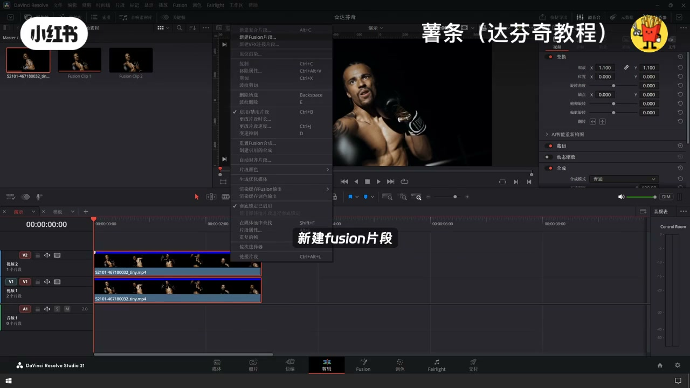
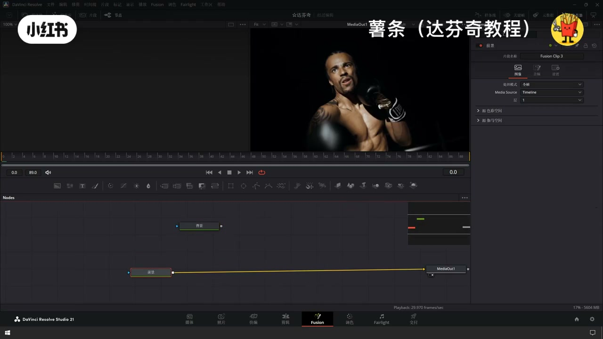
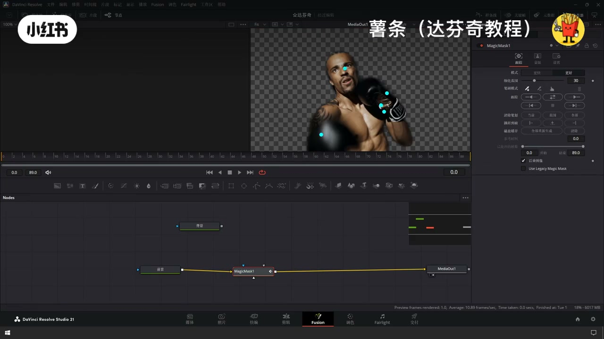
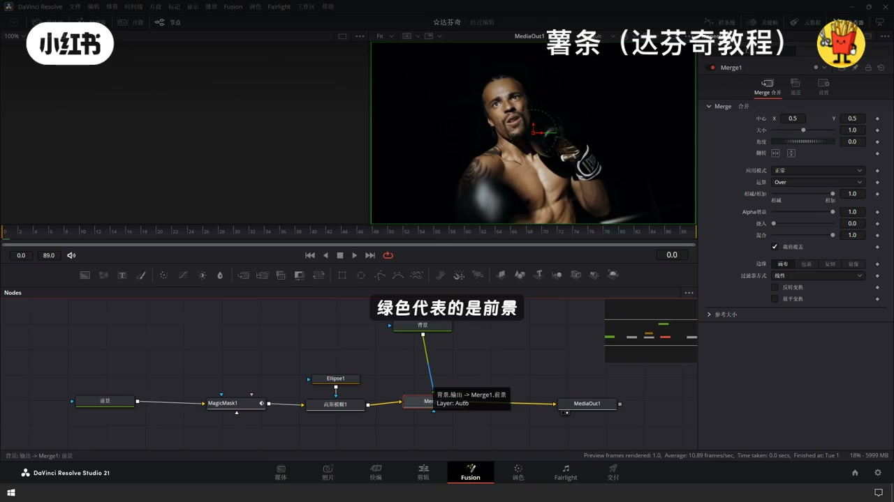
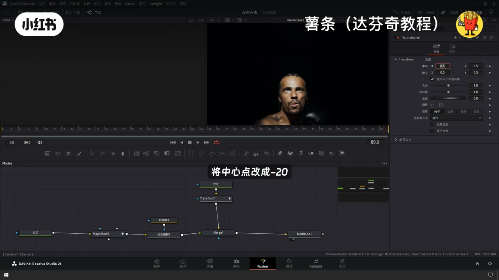
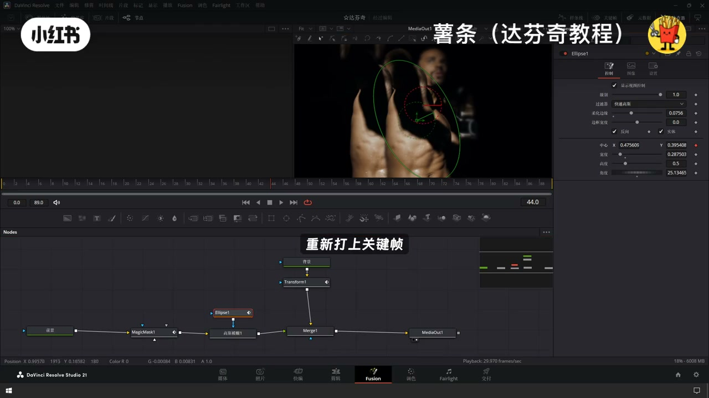
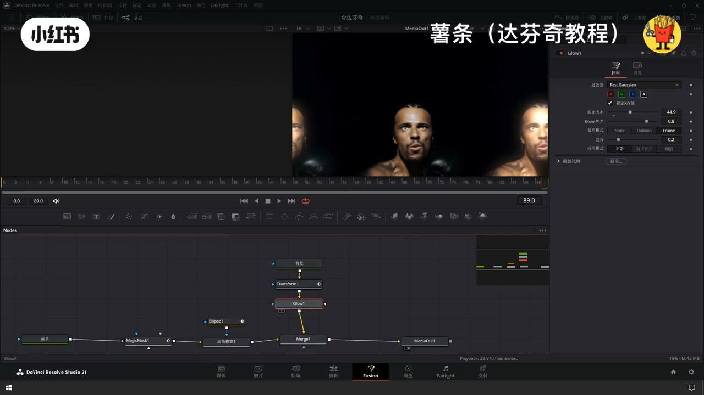
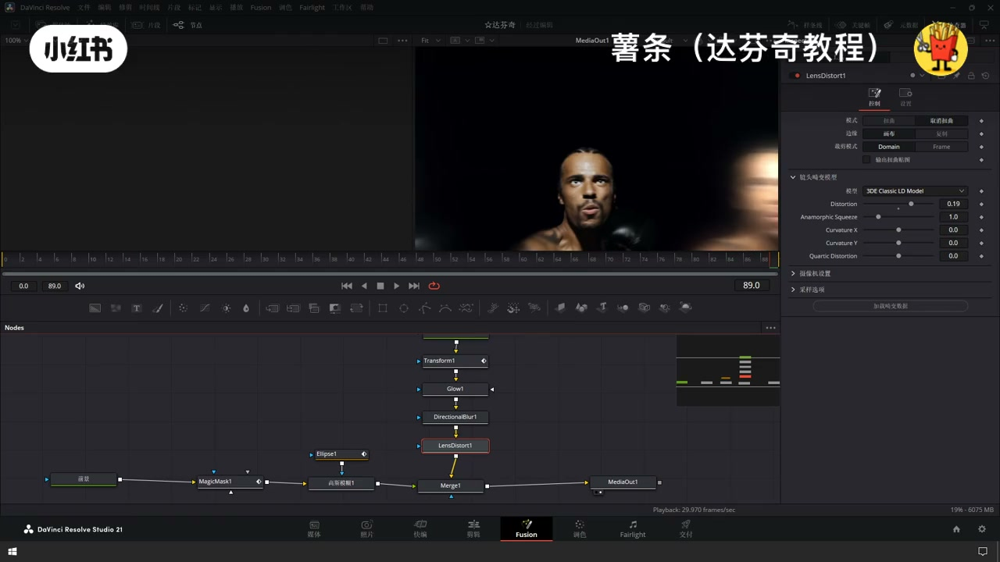

内容要点
「达芬奇制作超酷人物运动背景流动模糊特效」教程要点：使用达芬奇轻松做出超有电影感的人物运动背景模糊效果 → 首先来到剪辑页面 → 把素材向上复制一个 → 选中上下两段素材右键…
知识结构
使用达芬奇轻松做出超有电影感的人物运动背景模糊效果
适当的增加一点融化边缘
把主体的部分给模糊掉了
- 使用达芬奇轻松做出超有电影感的人物运动背景模糊效果
- 首先来到剪辑页面
- 把素材向上复制一个
- 选中上下两段素材右键
- 听见Fusion片段
使用达芬奇轻松做出超有电影感的人物运动背景模糊效果
00:00–01:18使用达芬奇轻松做出超有电影感的人物运动背景模糊效
使用达芬奇轻松做出超有电影感的人物运动背景模糊效果；首先来到剪辑页面；把素材向上复制一个；选中上下两段素材右键；听见Fusion片段；接着右键；在Fusion页面中打开；进来之后我们先对两段素材进行重拟；一个是背景；另外一个是前景；接着我们将多余的节点删除；比较清爽一点；我们先对前景进行操作；先选中前景节点；Shift加控；搜索神奇遮罩；先用神奇遮罩将画面中的人物主体扣出来；使用笔刷对人物进行选择；这里的模式可以切换成更好；然后我们进行一个前后的跟踪；扣好之后我们再添加一个高丝模糊；再新建一个圆形的蒙版；然后点击反转


01:17–02:19适当的增加一点融化边缘
适当的增加一点融化边缘；这样子主体是清晰的；但是主体的边缘会被高丝模糊；处理完前景之后；我们把背景节点跟前景节点连接在一起；绿色代表的是前景；黄色代表的是背景；现在两个是反了；我们选中这个合併节点；按住Ctrl加T；将前景和背景进行反转；接下来我们处理背景节点；首先给变景节点；先加一个变换节点；来掉第一帧；给中心点打上关键帧；再切换到最后一帧；将中心点改成-20；边缘模式改成包裹；然后我们从头播放过去看一下；这样子背景就会产生滑动运动的效果；主体运动的时候；我们发现这个高丝模糊


02:17–03:30把主体的部分给模糊掉了
把主体的部分给模糊掉了；我们回到高丝模糊；高丝模糊原型文板这个节点；给中心点位置；重新打上关键帧；稍微调整一下；让它始终能覆盖主体；接下来我们增强一下氛围感；在背景节点变换节点的后面；我们添加一个灰光节点；调整灰光的大小；在灰光节点的下方；我们再添加一个方向模糊；添加这个长度；这样我们的背景就有了；发光跟运动模糊的效果；最后我们可以再增加一个镜头激变；调整一下参数；这样子就大高完成了；我们播放一下看一下成品；这样一个氛围感拉满的人物；运动背景模糊特效就做完了；是不是非常简单




口述/画面要点（40段）
结合 Whisper medium 与画面大字整理；专有名词已校对。
使用达芬奇轻松做出超有电影感的人物运动背景模糊效果
首先来到剪辑页面
把素材向上复制一个
选中上下两段素材右键
听见Fusion片段
接着右键
在Fusion页面中打开
进来之后我们先对两段素材进行重拟
一个是背景
另外一个是前景
接着我们将多余的节点删除
比较清爽一点
我们先对前景进行操作
先选中前景节点
Shift加控
搜索神奇遮罩
先用神奇遮罩将画面中的人物主体扣出来
使用笔刷对人物进行选择
这里的模式可以切换成更好
然后我们进行一个前后的跟踪
扣好之后我们再添加一个高丝模糊
再新建一个圆形的蒙版
然后点击反转
适当的增加一点融化边缘
这样子主体是清晰的
但是主体的边缘会被高丝模糊
处理完前景之后
我们把背景节点跟前景节点连接在一起
绿色代表的是前景
黄色代表的是背景
现在两个是反了
我们选中这个合併节点
按住Ctrl加T
将前景和背景进行反转
接下来我们处理背景节点
首先给变景节点
先加一个变换节点
来掉第一帧
给中心点打上关键帧
再切换到最后一帧